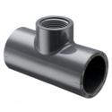
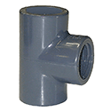

Schedule 80 PVC Fittings
Harrington is a Supplier of high-quality schedule 80 PVC fittings. We carry a wide range of sizes, spec types, and more. Schedule 80 PVC fittings are used for pressurized liquid distribution applications, such as in industrial and chemical settings. Select your product to request a quote, get additional information, and purchasing options.
 Spears 802-040SR 4 in Tee Socket x FSRT Gray PVC Schedule 80per EA · Sign in for price
Spears 802-040SR 4 in Tee Socket x FSRT Gray PVC Schedule 80per EA · Sign in for price
Spears 802-060F 6 in Tee Reducer Socket x FPT Gray PVC Schedule 80 Fabricatedper EA · Sign in for price- Spears 802-072BR 1/2 in x 1/4 in Tee Reducer Socket x FBT Gray PVC Schedule 80per EA · Sign in for price
- Spears 802-072SR 1/2 in x 1/4 in Tee Reducer Socket x FSRT Gray PVC Schedule 80per EA · Sign in for price

Spears 802-080F 8 in Tee Socket x FPT Gray PVC Schedule 80 Fabricatedper EA · Sign in for price- Spears 802-098SR 3/4 in x 1/4 in Tee Reducer Socket x FSRT Gray PVC Schedule 80per EA · Sign in for price
- Spears 802-101BR 3/4 in x 1/2 in Tee Reducer Socket x FBT Gray PVC Schedule 80per EA · Sign in for price
- Spears 802-101 3/4 in x 1/2 in Reducing Tee, Gray PVC, Socket x Socket x FPT, Schedule 80, 414 psiper EA · Sign in for price
- Spears 802-101SR 3/4 in x 1/2 in Tee Reducer Socket x FSRT Gray PVC Schedule 80per EA · Sign in for price
- Spears 802-128SR 1 in x 1/4 in Tee Reducer Socket x FSRT Gray PVC Schedule 80per EA · Sign in for price
- Spears 802-130 1 in x 1/2 in Reducing Tee, Gray PVC, Socket x Socket x FPT, Schedule 80, 378 psiper EA · Sign in for price
- Spears 802-130SR 1 in x 1/2 in Tee Reducer Socket x FSRT Gray PVC Schedule 80per EA · Sign in for price
- Spears 802-131 1 in x 3/4 in Reducing Tee, Gray PVC, Socket x Socket x FPT, Schedule 80, 378 psiper EA · Sign in for price
- Spears 802-131SR 1 in x 3/4 in Tee Reducer Socket x FSRT Gray PVC Schedule 80per EA · Sign in for price
- Spears 802-164SR 1-1/4 in x 1/4 in Tee Reducer Socket x FSRT Gray PVC Schedule 80per EA · Sign in for price
- Spears 802-166 1-1/4 in x 1/2 in Reducing Tee, Gray PVC, Socket x Socket x FPT, Schedule 80, 312 psiper EA · Sign in for price
- Spears 802-166SR 1-1/4 in x 1/2 in Tee Reducer Socket x FSRT Gray PVC Schedule 80per EA · Sign in for price
- Spears 802-167 1-1/4 in x 3/4 in Reducing Tee, Gray PVC, Socket x Socket x FPT, Schedule 80, 312 psiper EA · Sign in for price
- Spears 802-168 1-1/4 in x 1 in Reducing Tee, Gray PVC, Socket x Socket x FPT, Schedule 80, 312 psiper EA · Sign in for price
- Spears 802-168SR 1-1/4 in x 1 in Tee Reducer Socket x FSRT Gray PVC Schedule 80per EA · Sign in for price
- Spears 802-207SR 1-1/2 in x 1/4 in Tee Reducer Socket x FSRT Gray PVC Schedule 80per EA · Sign in for price
- Spears 802-209 1-1/2 in x 1/2 in Reducing Tee, Gray PVC, Socket x Socket x FPT, Schedule 80, 282 psiper EA · Sign in for price
- Spears 802-210 1-1/2 in x 3/4 in Reducing Tee, Gray PVC, Socket x Socket x FPT, Schedule 80, 282 psiper EA · Sign in for price
- Spears 802-211 1-1/2 in x 1 in Reducing Tee, Gray PVC, Socket x Socket x FPT, Schedule 80, 282 psiper EA · Sign in for price
- Spears 802-211SR 1-1/2 in x 1 in Tee Reducer Socket x FSRT Gray PVC Schedule 80per EA · Sign in for price
- Spears 802-212 1-1/2 in x 1-1/4 in Reducing Tee, Gray PVC, Socket x Socket x FPT, Schedule 80, 282 psiper EA · Sign in for price
- Spears 802-212SR 1-1/2 in x 1-1/4 in Tee Reducer Socket x FSRT Gray PVC Schedule 80per EA · Sign in for price
- Spears 802-245SR 2 in x 1/4 in Tee Reducer Socket x FSRT Gray PVC Schedule 80per EA · Sign in for price
- Spears 802-247 2 in x 1/2 in Reducing Tee, Gray PVC, Socket x Socket x FPT, Schedule 80, 240 psiper EA · Sign in for price
- Spears 802-247SR 2 in x 1/2 in Tee Reducer Socket x FSRT Gray PVC Schedule 80per EA · Sign in for price
- Spears 802-248 2 in x 3/4 in Reducing Tee, Gray PVC, Socket x Socket x FPT, Schedule 80, 240 psiper EA · Sign in for price
- Spears 802-248SR 2 in x 3/4 in Tee Reducer Socket x FSRT Gray PVC Schedule 80per EA · Sign in for price
- Spears 802-249 2 in x 1 in Reducing Tee, Gray PVC, Socket x Socket x FPT, Schedule 80, 240 psiper EA · Sign in for price
- Spears 802-250 2 in x 1-1/4 in Reducing Tee, Gray PVC, Socket x Socket x FPT, Schedule 80, 240 psiper EA · Sign in for price
- Spears 802-251 2 in x 1-1/2 in Reducing Tee, Gray PVC, Socket x Socket x FPT, Schedule 80, 240 psiper EA · Sign in for price
- Spears 802-287 2-1/2 in x 1/2 in Reducing Tee, Gray PVC, Socket x Socket x FPT, Schedule 80, 252 psiper EA · Sign in for price
- Spears 802-287SR 2-1/2 in x 1/2 in Tee Reducer Socket x FSRT Gray PVC Schedule 80per EA · Sign in for price
- Spears 802-288 2-1/2 in x 3/4 in Reducing Tee, Gray PVC, Socket x Socket x FPT, Schedule 80, 252 psiper EA · Sign in for price
- Spears 802-289 2-1/2 in x 1 in Reducing Tee, Gray PVC, Socket x Socket x FPT, Schedule 80, 252 psiper EA · Sign in for price
- Spears 802-290 2-1/2 in x 1-1/4 in Tee Reducer Socket x FPT Gray PVC Schedule 80per EA · Sign in for price